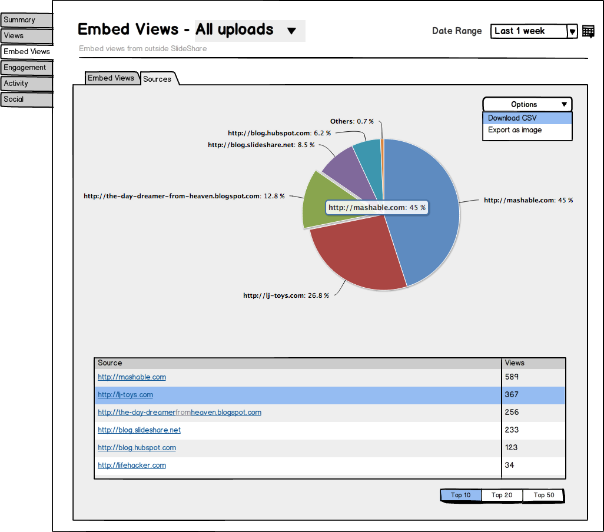

Nikhil Chandna
Nikhil ChandnaJuly 2014 in Web Design, User Interface
Revamped SlideShare Analytics
SlideShare's analytics platform was among the top premium offerings available as part of the SlideShare PRO suite launched somewhere in 2012. As SlideShare kept improving its platform, we wanted new data points to be made available to the users and at the same time update the design to make it look fresh, improve the information architecture and navigation. We'd also planned to open analytics to all 60 million SlideShare users sometime in the future and thus focused on builing a simple, scalable design and technology.

This was my first major project at SlideShare. As I got brief of the product requirements, I created some wireframes as shown below to share with the product and design team and gather quick feedback:

The design went through a lot of iterations as we realized that the navigation could be made simpler and information design could be more meaningful for the users.

On Decmeber 11, 2014 SlideShare launched analytics to all users which was a moment of pride for the whole team. I worked with the marketing team to create this deck below which should help you get a better understanding of the overall product.